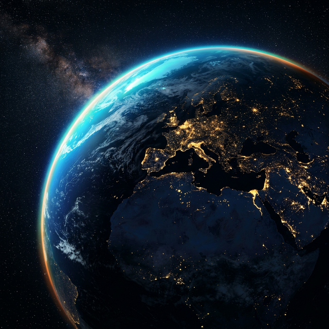

A World of Duality
A World of Duality
Exploring the striking contrast between humanity's greatest achievements and our deepest challenges. A comprehensive profile of every nation on Earth.
The 10 Greatest Things About Our World
- The intrinsic kindness and empathy of individuals
- The remarkable capacity for love and connection
- The resilience of the human spirit
- The breathtaking beauty and diversity of nature
- Scientific and technological advancements
- The pursuit of knowledge and understanding
- The power of creativity and art
- The planet's unique ability to sustain life
- The drive for progress and innovation
- The interconnectedness of humanity
The 10 Lousiest Things About Our World
- Human cruelty and the capacity for inflicting suffering
- Selfishness and greed driving inequality
- Moral hypocrisy and close-mindedness
- Overconfidence and vanity hindering correction
- The devastating impact of war and genocide
- Environmental destruction and climate change
- Social injustices like poverty and inequality
- The proliferation of misinformation and division
- The darker aspects of human psychology
- Vulnerability to natural disasters
Europe
Asia
Africa
Americas
Oceania